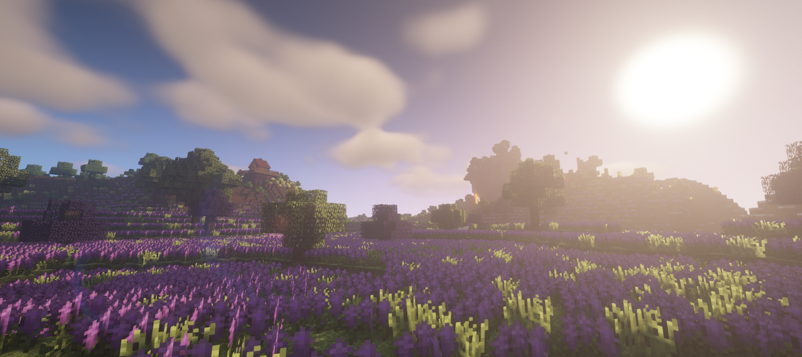

農業MOD
MOD名
Pam's Harvestcraft
解説サイト
https://w.atwiki.jp/minecraft/pages/1447.html(Minecraft Japan Wiki)
MOD名
Cooking for Blockheads
解説サイト
https://w.atwiki.jp/minecraft/pages/1657.html(Minecraft Japan Wiki)
© 2020 Muscari Server All Rights Reserved.